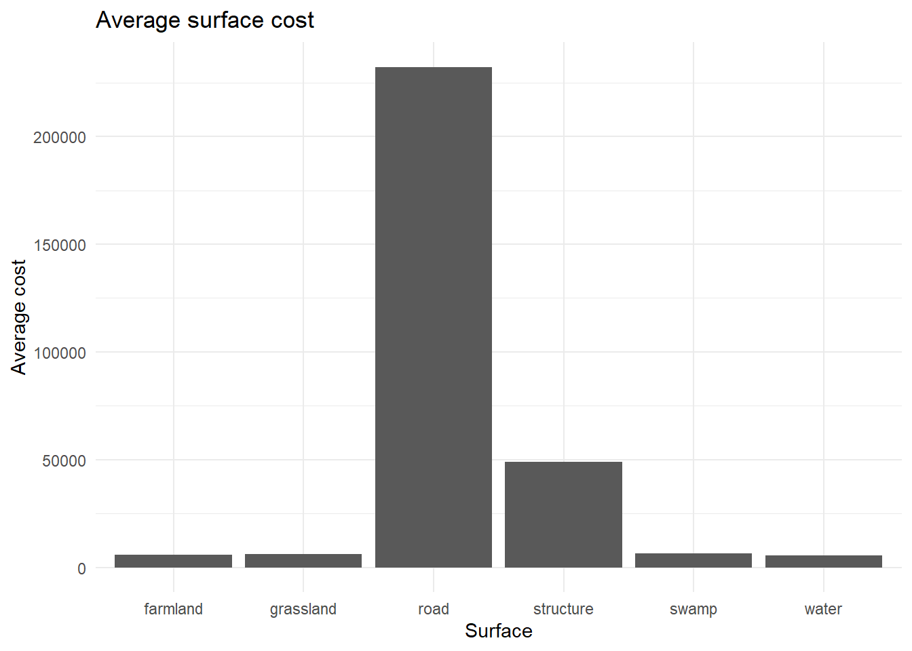
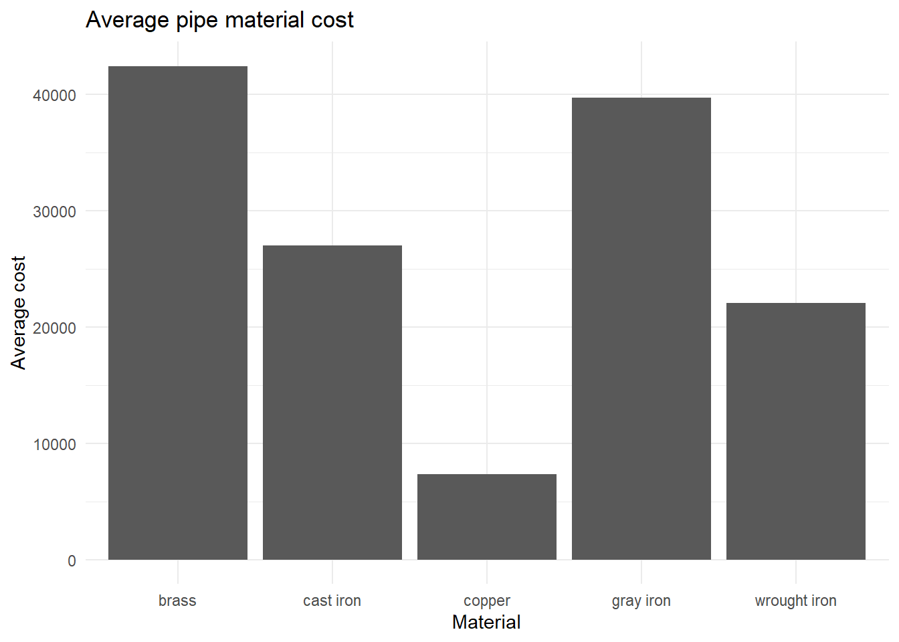

── Attaching core tidyverse packages ──────────────────────── tidyverse 2.0.0 ──
✔ dplyr 1.2.1 ✔ readr 2.2.0
✔ forcats 1.0.1 ✔ stringr 1.6.0
✔ ggplot2 4.0.3 ✔ tibble 3.3.1
✔ lubridate 1.9.5 ✔ tidyr 1.3.2
✔ purrr 1.2.2
── Conflicts ────────────────────────────────────────── tidyverse_conflicts() ──
✖ dplyr::filter() masks stats::filter()
✖ dplyr::lag() masks stats::lag()
ℹ Use the conflicted package (<http://conflicted.r-lib.org/>) to force all conflicts to become errors
pipe_data <-read_csv("data/raw/pipes.csv")
Rows: 43039 Columns: 8
── Column specification ────────────────────────────────────────────────────────
Delimiter: ","
chr (3): Pipe ID, Material, Surface
dbl (4): GPS x1, GPS y1, GPS x2, GPS y2
date (1): Lay date
ℹ Use `spec()` to retrieve the full column specification for this data.
ℹ Specify the column types or set `show_col_types = FALSE` to quiet this message.
train_data <-read_csv("data/raw/train.csv")
Rows: 14113 Columns: 4
── Column specification ────────────────────────────────────────────────────────
Delimiter: ","
chr (1): Pipe ID
dbl (1): Cost
date (1): Date
time (1): Time
ℹ Use `spec()` to retrieve the full column specification for this data.
ℹ Specify the column types or set `show_col_types = FALSE` to quiet this message.
merged_data <-merge(pipe_data, train_data, by ="Pipe ID")head(merged_data)
Pipe ID Lay date Material Surface GPS x1 GPS y1 GPS x2 GPS y2
1 P01002 1971-09-19 cast iron water 6512.35 4147.58 6536.59 4201.94
2 P01003 1971-09-18 cast iron water 6536.59 4201.94 6518.42 4201.93
3 P01005 1971-07-03 cast iron water 5117.28 4272.91 5126.37 4297.16
4 P01011 1965-01-22 cast iron structure 3588.78 5269.70 3576.63 5289.71
5 P01015 1971-07-15 cast iron water 4886.13 3931.87 4896.83 3936.32
6 P01017 1971-07-14 cast iron water 4906.81 3943.54 4916.03 3953.26
Date Time Cost
1 2023-06-21 04:13:00 3331.32
2 2024-04-28 21:05:00 4000.21
3 2024-07-03 10:05:00 2663.18
4 2024-07-26 01:53:00 4605.92
5 2025-10-01 23:18:00 6475.48
6 2025-02-12 21:29:00 91.50
nrow(pipe_data)
[1] 43039
nrow(train_data)
[1] 14113
nrow(merged_data)
[1] 14113
non_trained_data <-anti_join(pipe_data, train_data, by ="Pipe ID")head(non_trained_data)
# A tibble: 5 × 3
Material avg_cost_material n
<chr> <dbl> <int>
1 brass 42411. 978
2 gray iron 39674. 1113
3 cast iron 26986. 3240
4 wrought iron 22040. 7859
5 copper 7307. 917
#Graph avg cost for surfaceggplot(avg_cost_surface, aes(x = Surface, y = avg_cost_surface)) +geom_col() +labs(x ="Surface", y ="Average cost", title ="Average surface cost") +theme_minimal()

#Graph avg cost for materialggplot(avg_cost_material, aes(x = Material, y = avg_cost_material)) +geom_col() +labs(x ="Material", y ="Average cost", title ="Average pipe material cost") +theme_minimal()

Note that the 6th material “polyurethane” is not present because that material does not appear in train.csv
Note that road surface and brass is the most costly We need to perform a seperate test to see how much each material and surface affect the cost together. (Anova test?)